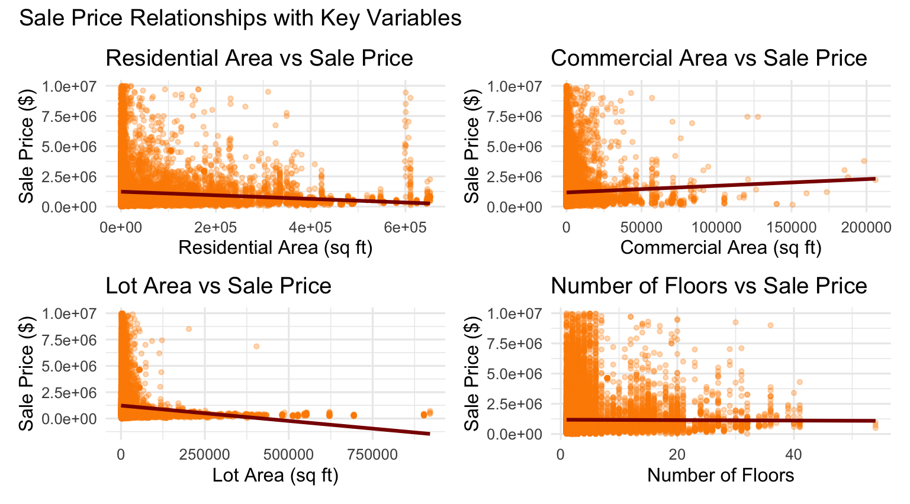
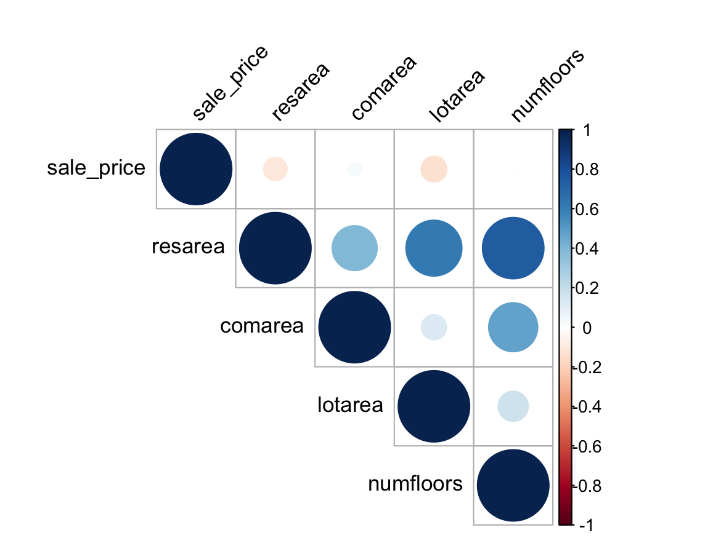
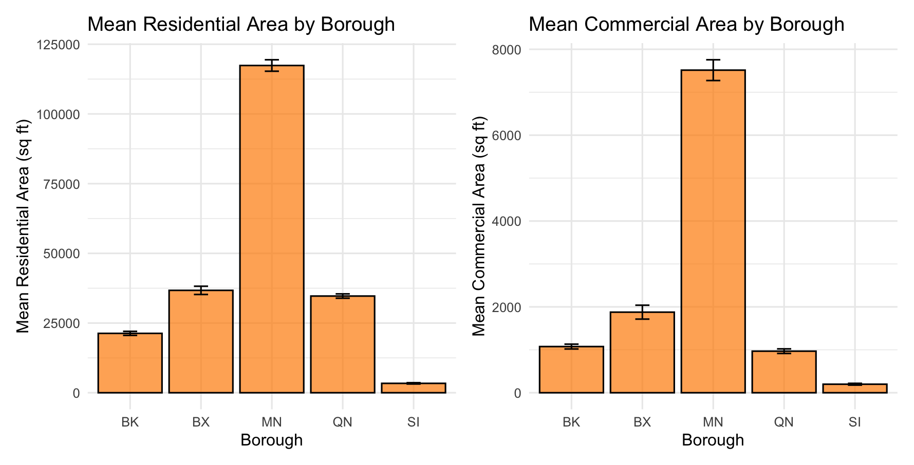

R Project
An analysis of 34,439 NYC property sales using linear regression, chi-square testing, ANOVA, and stepwise model selection to identify key predictors of sale prices across the five boroughs.
Overview
This project examined whether property dimensions or location factors better predict NYC housing prices, using four interconnected questions to build toward a stepwise regression model.
Q1
Does residential area or commercial area provide better predictive power for NYC property sale prices when combined with lot area and number of floors?
Q2
Is there a relationship between the borough a property is located in and its land use classification?
Q3
Does the mean residential area vary significantly across boroughs? Does the mean commercial area vary significantly across boroughs?
Q4
How much does adding borough and land use classification to a stepwise regression model improve prediction of NYC property sale prices compared to area-only models?
Results
Location variables substantially outperformed property dimensions across all four research questions.
Two regression models were fitted to compare residential vs. commercial area as predictors of sale price, controlling for number of floors. Residential area provided stronger predictive power, but both models explained very little variance, indicating that property dimensions alone are insufficient for predicting NYC sale prices.
A chi-square independence test confirmed a highly significant relationship between borough and land use (X² = 11,220, df = 40, p < 2.2e-16). Manhattan is dominated by multi-family residential buildings while outer boroughs show predominantly one and two-family properties, reinforcing that location shapes property type across the city.
ANOVA tests confirmed highly significant differences in both mean residential and commercial area across the five boroughs (p < 2e-16 for both). Manhattan averaged 117,374 sq. ft. of residential area versus 3,369 sq. ft. in Staten Island. Tukey HSD post-hoc tests revealed that Queens and the Bronx were the only non-significant pair for residential area, while Queens and Brooklyn showed no significant difference in commercial area.
Adding borough and land use to a stepwise regression model increased adjusted R² from 2.35% to 9.77% on training data and 9.45% on test data, a 7.1 percentage point improvement with minimal overfitting. Notably, stepwise selection dropped residential area entirely from the final model, indicating its predictive value was fully absorbed by location variables.
Visualizations
Key visualizations from the analysis illustrating variable relationships, correlation structure, and borough-level patterns.
Scatter Plot Matrix

Scatter plots with regression lines showing weak relationships between sale price and property area variables, illustrating the counterintuitive negative correlation for residential area in NYC.
Correlation Matrix

Correlation plot showing weak relationships across all variables. Residential and lot area show slight negative correlations with sale price, while commercial area shows a near-zero positive correlation.
Mean Residential and Commercial Area by Borough

Bar charts with standard error bars comparing mean residential and commercial area across boroughs. Manhattan's dramatically larger averages are visible across both variables.
Selected Code
Selected code blocks covering data preparation, regression modeling, chi-square testing, ANOVA, and stepwise selection.
Removes 188 observations missing residential or commercial area, imputes number of floors to median, and removes outliers beyond ±3 standard deviations for area variables.
# Remove missing values for residential and commercial area
nyc <- nyc %>%
filter(!is.na(resarea) & !is.na(comarea))
# Impute missing values to median for number of floors
nyc$numfloors[is.na(nyc$numfloors)] <- median(nyc$numfloors, na.rm = TRUE)
# Calculate z-scores and remove outliers beyond ±3 SD for area variables
nyc <- nyc %>%
mutate(z_resarea = abs((resarea - mean(resarea)) / sd(resarea)),
z_comarea = abs((comarea - mean(comarea)) / sd(comarea)),
z_lotarea = abs((lotarea - mean(lotarea)) / sd(lotarea))) %>%
filter(z_resarea <= 3, z_comarea <= 3, z_lotarea <= 3)Fits two regression models comparing residential vs. commercial area as predictors of sale price, with best subsets used to confirm variable selection.
# Best subsets regression
best_fit <- regsubsets(sale_price ~ resarea + comarea + lotarea + numfloors,
data = nyc, nbest = 2)
# Residential area model
fit1 <- lm(sale_price ~ resarea + numfloors, data = nyc)
# Commercial area model
fit2 <- lm(sale_price ~ comarea + numfloors, data = nyc)
summary(fit1) # Adj. R² = 0.0234
summary(fit2) # Adj. R² = 0.0019
# Check for multicollinearity
vif(fit1)
vif(fit2)Tests whether borough and land use classification are independent categorical variables using a contingency table.
# H0: Borough and land use are independent
# H1: Borough and land use are dependent (claim)
# Build contingency table
bor_land_table2 <- xtabs(count ~ landuse + borough_y, data = bor_land_table)
# Degrees of freedom
df <- (nrow(bor_land_table2) - 1) * (ncol(bor_land_table2) - 1)
# Critical value at df = 40, alpha = 0.05
cv <- qchisq(0.95, df) # CV = 55.76
# Chi-square test
chi_sq_test <- chisq.test(bor_land_matrix)
print(chi_sq_test) # X² = 11,220, p < 2.2e-16 → Reject H0Tests whether mean residential and commercial area differ significantly across NYC boroughs, with Tukey post-hoc comparisons to identify which borough pairs differ.
# ANOVA for residential area
anova_resarea <- aov(resarea ~ borough_y, data = nyc)
summary(anova_resarea) # F = 1131, p < 2e-16
# ANOVA for commercial area
anova_comarea <- aov(comarea ~ borough_y, data = nyc)
summary(anova_comarea) # F = 651.2, p < 2e-16
# Critical value
critical_value <- qf(1 - 0.05, df1 = 4, df2 = 33780) # CV = 2.37
# Tukey HSD post-hoc tests
tukey_resarea <- TukeyHSD(anova_resarea)
tukey_comarea <- TukeyHSD(anova_comarea)
print(tukey_resarea) # Manhattan significantly larger than all boroughs
print(tukey_comarea) # Queens-Brooklyn only non-significant pairSplits data 70/30, fits a full model with area and location variables, then applies bidirectional stepwise selection to identify the optimal predictor set.
# 70/30 train/test split
set.seed(123)
train_index <- createDataPartition(nyc$sale_price, p = 0.7, list = FALSE)
caret_train <- nyc[train_index, ]
caret_test <- nyc[-train_index, ]
# Full model with area + location variables
full_model_location <- lm(sale_price ~ resarea + comarea + lotarea +
numfloors + borough_y + factor(landuse),
data = caret_train)
# Bidirectional stepwise selection
stepwise_location <- stepAIC(full_model_location,
direction = "both", trace = FALSE)
summary(stepwise_location) # Adj. R² = 0.0977, resarea dropped
# Test set predictions
preds_test_location <- predict(stepwise_location, newdata = caret_test)
# Test R²
ss_res <- sum((caret_test$sale_price - preds_test_location)^2)
ss_tot <- sum((caret_test$sale_price - mean(caret_test$sale_price))^2)
test_r2 <- 1 - (ss_res / ss_tot)
cat("Test R²:", round(test_r2, 4)) # 0.0945